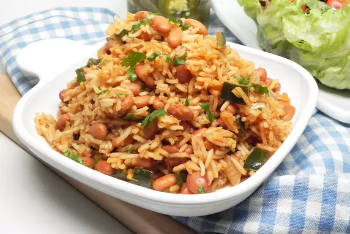

Back
Mexican Rice and Beans

Packed full of delicious authentic Mexican spices and hearty beans, this tasty bean dish can be enjoyed own its
own for a vegetarian lunch or dinner, or served as a filling side dish .
Ingredients
- 2 tablespoon olive oil
- 1 small onion,diced
- 1 small poblano pepper, diced
- 1 clove garlic, chopped
- 1 cup basmati rice
- 2 teaspoons paprika
- 1 teaspoon ground cumin
- 1 teaspoon dried oregano
- salt and ground black pepper to taste
- 2 tablespoons tomato paste
- 2 cups vegetable broth
- 1 (14 ounce) can pinto beans, rinsed and drained
Steps:
- Heat olive oil over medium-high heat. Add onion, poblano pepper, and garlic; saute for 2 to 3 minutes.
Add
rice. Cook, stirring occasionally, until rice is completely coated in oil, about 2 minutes. Season with
paprika, cumin, oregano, salt, and pepper.
- Stir in tomato paste and cook for 1 to 2 minutes. Add vegetable broth and pinto beans. Bring to a boil;
reduce heat to low. Cover and simmer until rice is tender, 15 to 20 minutes. Remove from heat, keep
covered,
and let stand for at least 5 minutes. Fluff with a fork.